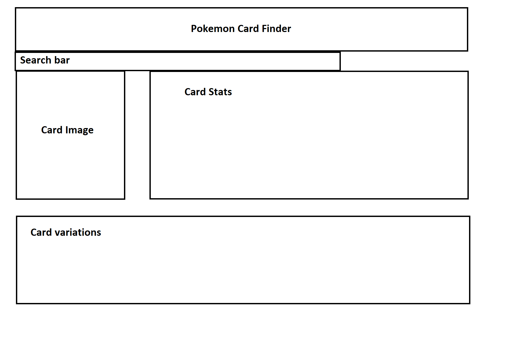
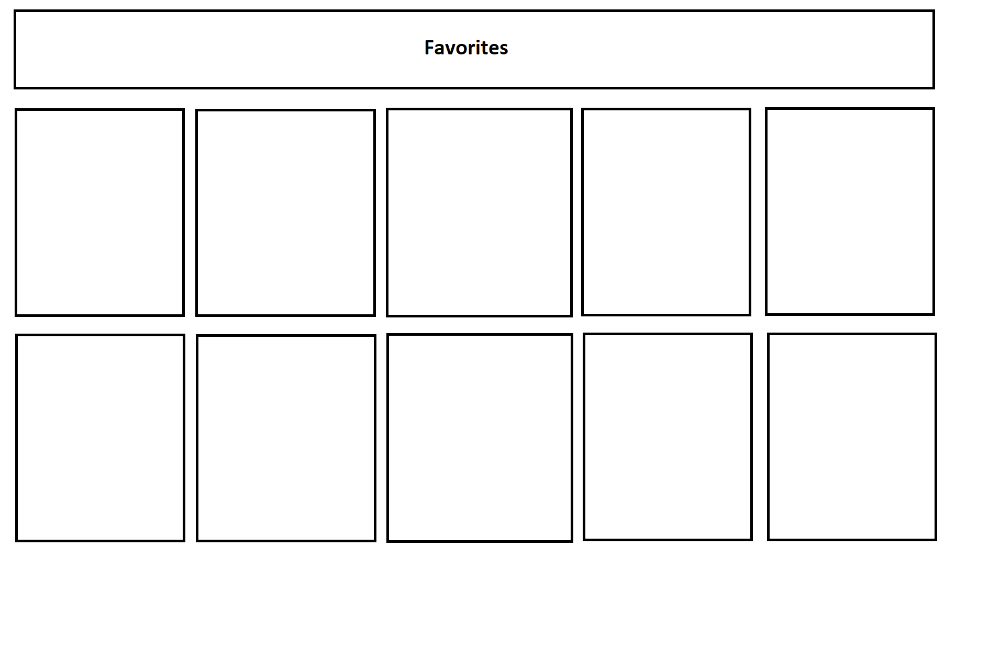

Documentation
Checkpoint 1: Proposal
API Used
Pokemon TCG API: https://pokemontcg.io/
Features
-
1. Search for a card through typing the Pokemon name.
-
2. Search for a card through typing the Pokemon type.
-
3. Search for a card through typing the Pokemon subtype.
-
4. Display all the currently available cards of the searched Pokemon and all of its stats.
-
5. Provide a link to TCGplayer for the user to purchase their chosen card.
-
6. Click on the "Favorite" icon to add the current card to the "Favorites" page for later uses.
-
7. Community page to show everyone's favorited cards, so users may take a card's popularity into consideration when building a deck.


Checkpoint 2
Project Requirements:
Checkpoint 2 Requirements
Resources Utilized:
API Used
Pokemon TCG API: https://pokemontcg.io/
Noteworthy
-
1. Everything is styled with Bulma and in hero.
-
2. When a card is searched, the app provides the user with a link to TCGplayer.com where they can see the price and availablity of the card for a quick purchase.
-
3. Home page has a detailed description of how to use them app, and corresponding buttons to get a user started.
-
4. The app fails graciously at every level, whether if the user click "Search" without an entry or a bad entry. Even block a card from being displayed if the data isn't complete.
-
5. All cards are displayed neatly and easy to see.
-
6. When a card is clicked, it will immediately become the top card with all of its stats displayed, and for the convenience of the users, the page will automatically return to the top.
-
7. Firebase storage was done with self-taught FireStore instead of Realtime database.
Grading
-
1. Required 4 pages, global navigation system, uses Bulma, uses a web service or data source. ✓
-
2. Every time the user clicks the search button, this App page WILL automatically save the last term searched by the user and the third control's UI state in the browser's localStorage. ✓
-
3. App-navbar, and have "you are here cues". ✓
-
4. Uses fetch() instead of XHR. ✓
-
5. Using Firebase with a "Community" page, which shows the favorites of ALL of the app's users. ✓
-
6. The app must be easy to use, with well-labeled and obvious controls. ✓
-
7. The app must always "let the user know what's going on" with activity indicators. ✓
-
8.The app must "fail gracefully" and errors must be communicated to the user. ✓
-
9. The app must have "Impact", serves a purpose, easy to use, functional, and aesthetically pleasing. ✓
-
10. I believe I fullfilled every requirement perfectly, and went even beyond with some of the features.
To Do
-
1. Add different ways to sort the cards displayed on "app", "favorites", and "community" page.
-
2. Make the website look more "professional".
-
3. When displaying cards on the "app" page, seperate the cards into different pages to reduce load time.